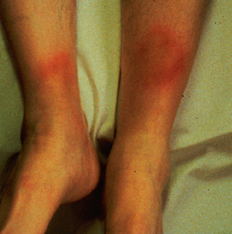
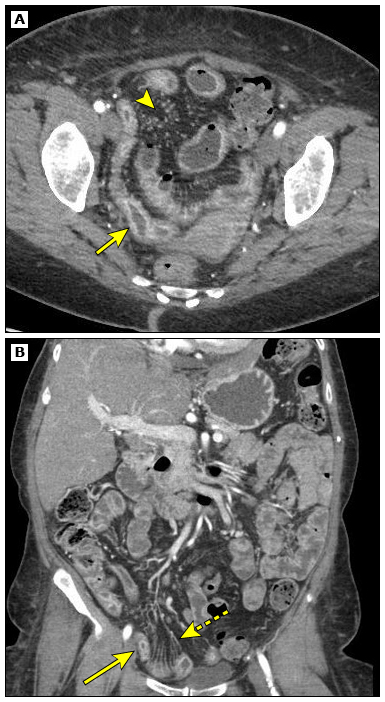
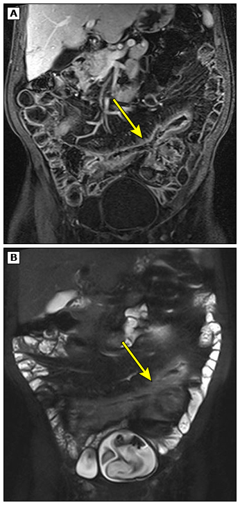
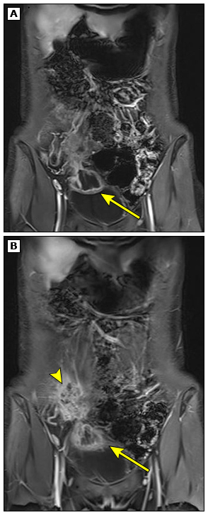
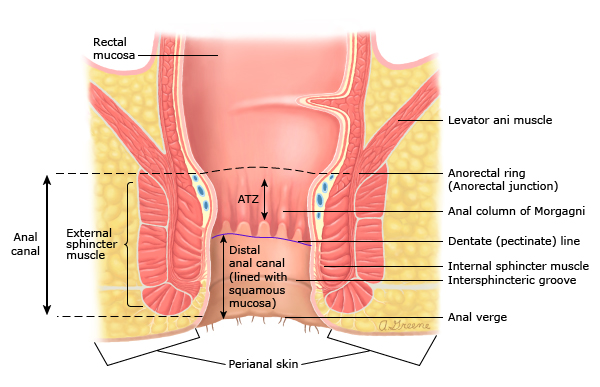
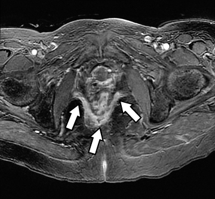
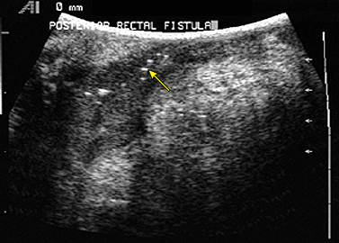
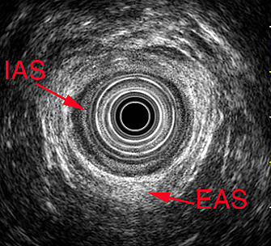
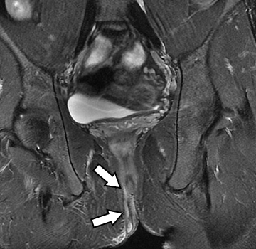
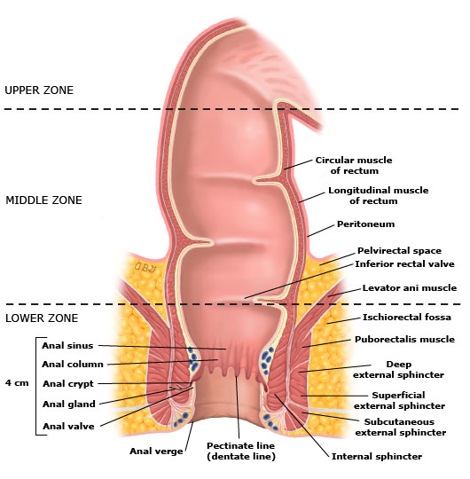

Crohn's Disease: Staging, Medical Algorithms, and Surgical Interventions
A comprehensive cognitive task analysis and evidence-based guideline for the surgical resident.
Pathophysiology, Presentation & Montreal Staging
Montreal Staging Matrix
Crohn's disease (CD) is a chronic, immune-mediated inflammatory bowel disease characterized by transmural inflammation that can involve any part of the gastrointestinal tract from the mouth to the anus. Unlike ulcerative colitis, which is confined to the mucosa, CD is characterized by skip lesions (segmented areas of disease interspersed with normal mucosa) and rectal sparing in 50% of colonic presentations.
The standard clinical framework used worldwide to classify Crohn's disease epidemiology and guide therapeutic options is the Montreal Classification. It categorizes the disease based on three parameters: age of onset (A), location (L), and disease behavior (B).
| Category | Classification Parameter | Clinical Description | Clinical and Prognostic Significance |
|---|---|---|---|
| Age of Onset (A) | A1 | Diagnosis at < 16 years of age | Highly aggressive phenotype, high rate of stricturing/penetrating complications, growth retardation. |
| A2 | Diagnosis between 17 and 40 years of age | Standard diagnostic peak; variable presentation; tracks classic clinical courses. | |
| A3 | Diagnosis at > 40 years of age | Indolent course, lower rates of stricturing/fistulizing disease, often mimics diverticulitis. | |
| Location (L) (Maximum extent before first surgery) |
L1 | Terminal ileum (isolated ileal disease; ~30%) | High risk of stricturing (B2) and rapid mechanical small bowel obstruction. |
| L2 | Colon (isolated colonic disease; ~20%) | Presents with bloody diarrhea; rectal mucosal sparing in 50%; highest risk of perianal disease (B3p). | |
| L3 | Ileocolon (involvement of both ileum and colon; ~50%) | Mixed presentation; high inflammatory load; high long-term cumulative surgical resection risk. | |
| L4 | Isolated upper GI tract modifier (added as suffix, eg. L1+L4) | Involvement of mouth, esophagus, or gastroduodenal segments; highly progressive, high stenotic complications. | |
| Disease Behavior (B) | B1 | Non-stricturing, non-penetrating (purely inflammatory) | Early or superficial disease state; high response to anti-inflammatory medical induction. |
| B2 | Stricturing (fibrotic narrowing causing obstruction) | Lumen narrowing <50% with upstream prestenotic dilatation ≥2.5cm; mandates strictureplasty or resection. | |
| B3 | Penetrating (sinus tracts, fistulas, masses, or abscesses) | Deep transmural track; results in enteroenteric, enterovesical, or enterocutaneous fistulas. | |
| p | Perianal disease modifier (added as suffix, eg. B2p) | Tracks severe tissue destruction; mandates EUA and non-cutting Seton placement before biologics. |
Clinical Features & Extraintestinal Manifestations (EIMs)
The cardinal clinical presentation of Crohn's disease includes chronic crampy abdominal pain (frequently localized to the right lower quadrant due to terminal ileitis L1), chronic non-bloody diarrhea (though colonic CD can cause hematochezia), fatigue, and weight loss (often due to food-fear or malabsorption).
Because Crohn's is a systemic immunologic condition, approximately 25% of patients develop at least one **extraintestinal manifestation (EIM)**. EIMs are divided into those that track bowel disease activity and those that run an independent clinical course.
Large joint, asymmetric, non-destructive. Tracks bowel disease activity.
Erythema Nodosum (tracks bowel activity) and Pyoderma Gangrenosum (independent).
Uveitis (anterior chamber pain/photophobia) and Episcleritis (painless scleral redness).
Primary Sclerosing Cholangitis. Leads to bile duct strictures and cholangiocarcinoma. Independent of bowel resection.
| EIM Category | Specific Manifestations | Correlation with Bowel Flare Activity | High-Yield Clinical & Pathology Details |
|---|---|---|---|
| Ocular (5%) | Episcleritis | Yes — Tracks Bowel Activity | Painless scleral redness and vascular congestion. No visual loss. Resolves with treatment of the underlying intestinal flare. |
| Anterior Uveitis | No — Independent Course | Deep, throbbing eye pain, photophobia, blurred vision, and ciliary flush. Associated with HLA-B27. Requires urgent topical glucocorticoid drops and ophthalmology referral to prevent synechiae and permanent blindness. | |
| Dermatologic (10%) | Erythema Nodosum (EN) | Yes — Tracks Bowel Activity | Tender, erythematous, warm subcutaneous nodules on anterior shins (extensor surfaces). Represents delayed-type hypersensitivity reaction. Resolves as bowel inflammation is controlled. |
| Pyoderma Gangrenosum (PG) | No — Independent Course | Starts as an inflammatory pustule or vesicle at site of minor trauma (pathergy), rapidly breaks down into a painful, necrotic, deep ulcer with purulent base and undermined, violaceous borders. *Fistulotomy/surgery is strictly contraindicated during acute phases!* Treated with systemic corticosteroids or anti-TNF biologics. | |
| Musculoskeletal (20%) | Peripheral Arthritis (Type I & II) | Type I: Yes | Type II: No | Type I: Pauciarticular (<5 joints), asymmetric, large joint (knees, ankles), tracks bowel activity. Type II: Polyarticular (≥5 joints), symmetric, small joints (MCP, PIP), runs independent course. Non-destructive. |
| Axial Arthropathy (AS/Sacroiliitis) | No — Independent Course | Insidious onset morning back pain, improved with exercise. Strongly linked with HLA-B27. Progressive joint fusion (bamboo spine). Does not improve with bowel resection. | |
| Hepatobiliary (5%) | Primary Sclerosing Cholangitis (PSC) | No — Independent Course | Fibrosing, inflammatory destruction of intra- and extrahepatic bile ducts ("onion skin" fibrosis). Strongly linked with IBD (especially colitis). High cholangiocarcinoma risk. *Bowel resection does not arrest liver disease progression.* |
Extraintestinal Manifestations Clinical Atlas

Active anterior uveitis presenting as circumcorneal injection (ciliary flush) and painful photophobia. Requires immediate ophthalmologic assessment.

Episcleral vessel engorgement and sectorial redness. Painless and tracks intestinal disease activity closely.

Tender, warm, raised red nodules on the anterior shins. Corresponds to active intestinal inflammation flares.

Classic Pyoderma Gangrenosum necrotic ulcer with undermined violaceous borders and central purulence. Runs an independent course.
Additional chronic extraintestinal complications include:
- Osteopenia / Osteoporosis: Due to chronic glucocorticoid use, persistent systemic cytokine release (TNF-alpha upregulates osteoclasts), and malabsorption of calcium and Vitamin D in the small intestine. Leads to a high cumulative risk of vertebral compression fractures.
- Nephrolithiasis (Kidney Stones):
- *Calcium Oxalate Stones:* Caused by terminal ileal disease/resection leading to steatorrhea. Unabsorbed fatty acids in the intestinal lumen bind calcium, preventing it from binding to dietary oxalate. Free oxalate is rapidly absorbed in the colon, leading to hyperoxaluria and calcium oxalate precipitation in renal tubules.
- *Uric Acid Stones:* Caused by chronic watery diarrhea leading to dehydration and systemic metabolic acidosis, resulting in highly concentrated and acidic urine.
- Cholelithiasis (Gallstones): Impaired terminal ileal bile acid reabsorption decreases the bile salt pool. Bile becomes supersaturated with cholesterol, leading to rapid cholesterol gallstone precipitation.
Gross & Micro Pathology
Definitive diagnosis of Crohn's disease combines macroscopic visual patterns with key microscopic histologic details:
- Macroscopic (Gross) Pathology: Segmental skip lesions, deep serpiginous or aphthous ulcerations, mucosal cobblestoning (islands of intact mucosa between ulcerating clefts), fibrofatty proliferation of the mesentery (known as "creeping fat" or "fat wrapping" representing mesenteric adipocyte hyperplasia secondary to chronic cytokine release), and thick, rigid bowel walls leading to luminal strictures (resulting in the radiologic "string sign").
- Microscopic (Histologic) Pathology: Transmural inflammatory infiltrate (extending through mucosa, submucosa, muscularis propria, and serosa), submucosal thickening, lymphoid aggregates in the submucosa/serosa, and non-caseating epithelial granulomas containing multinucleated giant cells. Granulomas are noted in only 30% of surgical specimens; their absence does not rule out Crohn's disease.

Focal ulcerations running longitudinally and transversely surrounding islands of normal-appearing, hyperplastic mucosa creating a cobblestone look.

A classic non-caseating multinucleated giant-cell granuloma within the submucosa, diagnostic for CD when present (identified in ~30% of biopsies).
Diagnostic Staging & Biomarker Thresholds
Blood & Fecal Calprotectin
No single blood test can diagnose Crohn's disease. Laboratory testing is complementary, serving to confirm active systemic inflammation, exclude enteric infections, and identify malabsorptive deficiencies.
Serum C-Reactive Protein (CRP) tracks disease activity, but fecal inflammatory biomarkers have revolutionized non-invasive screening and disease flare surveillance. **Fecal Calprotectin** (a calcium-binding protein complex derived from neutrophils) provides extremely high sensitivity for mucosal inflammation.
Biochemistry of Fecal Calprotectin: Calprotectin is a heterodimeric protein complex (S100A8/S100A9) that makes up to 60% of the soluble cytosol protein in neutrophils. It is highly resistant to enzymatic degradation in the intestinal lumen, making it an exceptionally stable and reliable marker of gut mucosal inflammation.
| Biomarker | Clinical Cutoff | Diagnostic / Management Significance |
|---|---|---|
| Fecal Calprotectin | < 40 – 50 mcg/g | High Negative Predictive Value (>99%). Safely rules out inflammatory bowel disease, pointing to functional disorders (IBS) instead. Endoscopy can be avoided. |
| > 150 – 250 mcg/g | Indicates active mucosal inflammation. Highly warrants progress to diagnostic optical ileocolonoscopy and biopsy. | |
| C-Reactive Protein (CRP) | Elevated (> 5 – 10 mg/L) | Confirms active systemic inflammation. Used to differentiate inflammatory flares from functional symptoms, although some patients with isolated ileal disease can have a normal serum CRP. |
| Vitamin B12 | Decreased (< 200 pg/mL) | Direct indicator of terminal ileal malabsorption (failure of intrinsic factor-B12 complex absorption). Mandates subcutaneous replacement. |
| Fecal Pathogens | Negative | Stool culture, microscopy for ova/parasites, and C. difficile PCR are mandatory to rule out acute infectious colitis before concluding a Crohn's flare. |
CTE & MRE Radiologic Signs
Because direct optical endoscopy can only visualize the terminal ileum, cross-sectional small bowel imaging is mandatory to evaluate the L1/L3/L4 segments, check stricturing severity, and identify occult penetrating disease.
Computed Tomography Enterography (CTE) and Magnetic Resonance Enterography (MRE) are the gold standards. Both require the ingestion of 1.5 to 2.0 liters of neutral oral contrast to fully distend the small bowel loops.
- Wall Thickening: Normal bowel wall is < 2 mm. Segmental wall thickness **> 3 mm** with luminal narrowing indicates active disease.
- Comb Sign: Hyperemia and engorgement of the mesenteric vasa recta feeding the inflamed bowel loop, resembling the teeth of a comb on coronal views. Reflects high, active transmural inflammation.
- Creeping Fat ("Fat Wrapping"): Visualized as a separation of bowel loops due to inflammatory proliferation of mesenteric fat creeping over the serosa of the diseased loop. Represents serosal fat wrapping secondary to chronic transmural inflammation.
- Target / Stratified Enhancement: Altered enhancement of the bowel wall with mucosal hyperenhancement and submucosal edema (creating a dark middle ring and bright inner/outer rings).
- Fistulas & Abscesses: CTE is superior for identifying acute sepsis, fluid collections with extraluminal gas, and complex sinus tracts. MRE is highly preferred for patients < 35 years old to avoid radiation, and is the gold standard for pelvic perianal tract mapping.

Coronal CTE slice illustrating thick-walled ileal loops, associated creeping fat wrapping, and prominent, engorged vasa recta vessel loops creating the classic Comb Sign (arrows).
Small Bowel Cross-Sectional Radiology Atlas

Coronal CT Enterography showing focal segmental active ileitis with marked bowel wall thickening, mural stratification (target sign), and surrounding mesenteric hyperemia.

CTE illustrating multi-segmental disease (skip areas) with thick, actively inflamed small bowel segments separated by completely normal distended bowel loops.

CTE depicting severe luminal stenosis (stricture) with prominent prestenotic dilatation (≥2.5 cm) of the upstream loop, a classic indication for strictureplasty or resection.

T2 coronal MR Enterography displaying a complex star-like configuration of fistulizing tracts (sinus tracts) communicating between multiple loops of terminal ileum.

Pelvic MRI showing a large, fluid-filled, rim-enhancing intra-abdominal/pelvic abscess secondary to penetrating terminal ileal Crohn's disease, necessitating percutaneous drainage.
Medical Management & Biologic Trough Targets
Clinical Staging & Interactive Severity Calculator
Clinicians utilize clinical staging tools to guide the initiation of medical therapy. The **Crohn's Disease Activity Index (CDAI)** is the standard research index (incorporating 8 variables), while the **Harvey-Bradshaw Index (HBI)** is a simplified, highly correlated derivative designed for routine clinic use.
Biologic & Combination Therapy Algorithms
Medical management has shifted from a rigid "step-up" approach to early "top-down" therapy for high-risk patients to prevent irreversible bowel stricturing (B2) or penetration (B3).
- Mild / Low-Risk Crohn's (L1 or small L3, HBI < 5): First-line induction utilizes **Budesonide (controlled-release 9 mg daily)**. Budesonide is an oral glucocorticoid with high affinity for receptors in the terminal ileum and ascending colon. Because of >90% first-pass hepatic metabolism, it has minimal systemic glucocorticoid side effects. 5-ASAs (mesalamine) have weak efficacy in CD and are generally avoided.
| Steroid Formulation | Pharmacokinetic & Release Mechanism | Target Gastrointestinal Segment | Systemic Bioavailability & Side-Effect Profile |
|---|---|---|---|
| Controlled-Release Budesonide (Entocort EC) | Ethylcellulose-coated microgranules release the drug in a pH-dependent (≥5.5) and time-dependent fashion. | Terminal Ileum & Ascending Colon (L1 / right-sided L3) | **< 10% Systemic Bioavailability** due to extensive first-pass hepatic clearance. Extremely low rate of Cushingoid symptoms, osteoporosis, and adrenal suppression. Safe for moderate induction. |
| Multi-Matrix System Budesonide (Uceris MMX) | MMX technology surrounds the drug in lipophilic and hydrophilic matrices, delaying release until the pH ≥7.0 in the terminal ileum/colon. | Entire Colon (L2 / Colonic Crohn's) | **< 10% Systemic Bioavailability**. Minimizes systemic exposure while achieving uniform mucosal steroid concentrations throughout the colon. |
| Systemic Steroids (Prednisone / Methylprednisolone) | Rapidly and completely absorbed in the proximal jejunum, leading to immediate high systemic tissue levels. | Diffuse GI Tract (Active systemic inflammation) | **100% Bioavailability**. High rate of severe systemic complications: fluid retention, metabolic alkalosis, psychiatric changes, osteonecrosis, adrenal crisis on withdrawal, and impaired surgical wound/anastomotic healing. |
- Moderate to Severe / High-Risk (HBI > 8, penetrating B3 behavior, or perianal modifier): Indicated for **Combination Therapy** consisting of a biologic agent and an immunomodulator:
- Anti-TNF Biologics: **Infliximab (Remicade)** (chimeric IgG1 monoclonal antibody, 75% human / 25% murine, 5 mg/kg IV infusion at weeks 0, 2, 6, then every 8 weeks) or **Adalimumab (Humira)** (fully human IgG1 monoclonal antibody, 160 mg subQ loading, 80 mg at week 2, then 40 mg every other week).
- Immunomodulators: Thiopurines (Azathioprine 1.5 - 2.5 mg/kg or 6-Mercaptopurine 1.0 - 1.5 mg/kg) or Methotrexate (15 - 25 mg subQ weekly). Combination therapy is superior as the immunomodulator suppresses anti-drug antibody (ADA) formation, maintaining high trough levels.
| Advanced Therapy Class | Specific Agent | Detailed Molecular Target & Mechanism | Standard Dosing & Route | ABSITE Key Facts |
|---|---|---|---|---|
| Anti-TNFα Monoclonals | Infliximab (Remicade) | Chimeric (75% human / 25% mouse) IgG1 antibody targeting soluble and transmembrane TNF-alpha, inducing apoptosis of activated T-cells. | 5 mg/kg IV infusion at 0, 2, and 6 weeks, then every 8 weeks maintenance. | Chimeric nature leads to high rate of **Anti-Drug Antibodies (ADAs)**. Combination with thiopurine is mandatory to prevent immunogenicity. |
| Adalimumab (Humira) | Fully human IgG1 monoclonal antibody targeting TNF-alpha. High affinity, blocks TNF interaction with p55 and p75 cell surface receptors. | 160 mg SubQ loading (divided), 80 mg at week 2, then 40 mg SubQ every other week. | Fully human; lower immunogenicity compared to Infliximab. Self-administered. | |
| Anti-Integrin (Gut-Selective) | Vedolizumab (Entyvio) | Humanized antibody targeting **α4β7 integrin** on circulating memory T-cells, blocking interaction with **MAdCAM-1** on gut venules. | 300 mg IV infusion at 0, 2, and 6 weeks, then every 8 weeks maintenance. | **Gut-selective immunosuppression**. Highly safe; does not carry systemic infection risks. Does *not* cause Progressive Multifocal Leukoencephalopathy (PML) unlike natalizumab (α4β1/VCAM-1 blocker). |
| Anti-IL-12 / IL-23 p40 | Ustekinumab (Stelara) | Monoclonal antibody targeting the **p40 subunit** shared by IL-12 and IL-23 cytokines, inhibiting subsequent IL-12/23 receptor binding and Th1/Th17 differentiation. | Single weight-based IV induction (~260-520 mg), followed by 90 mg SubQ every 8 weeks. | Excellent safety profile. Highly effective for patients failing anti-TNF therapies. |
| Selective Anti-IL-23 p19 | Risankizumab (Skyrizi) | Monoclonal antibody targeting the **p19 subunit** of IL-23 specifically, sparing IL-12 signaling. Upregulates regulatory pathways. | 600 mg IV induction at 0, 4, 8 weeks, followed by 360 mg SubQ every 8 weeks. | Highly selective; represents the newest biologic class with exceptional mucosal healing rates. |
| Oral Small Molecule (JAK-1) | Upadacitinib (Rinvoq) | Oral small-molecule selective **JAK-1 (Janus Kinase 1)** inhibitor, blocking intracellular signal transduction of multiple pro-inflammatory cytokines. | 45 mg PO daily induction for 12 weeks, followed by 15 mg or 30 mg PO daily maintenance. | Fast onset of action. Avoid in patients with active thromboembolic risk (VTE) or severe hepatic impairment. |
- Therapeutic Drug Monitoring (TDM) Targets: For patients in remission or with loss of response, check biologic trough levels:
- Infliximab Target Trough: **≥ 5 mcg/mL** (Standard target); **≥ 10 mcg/mL** for active fistulizing Crohn's disease to promote tissue healing.
- Adalimumab Target Trough: **≥ 7.5 mcg/mL**.
| Clinical Scenario (Secondary Loss of Response) | Biologic Trough Level | Anti-Drug Antibodies (ADA) Titer | High-Yield Clinical Action & Management Protocol |
|---|---|---|---|
| Subtherapeutic Drug Levels (No ADAs) | Low (< 5 mcg/mL Infliximab) | Negative or Low Titers (< 3-10 U/mL) | **Dose Escalation:** Increase dose (e.g. to 10 mg/kg) or shorten infusion interval (e.g. from 8 weeks to 4–6 weeks) to overcome rapid clearance. |
| Subtherapeutic Drug Levels + High ADAs | Low (< 3 mcg/mL) | High Titers (> 10 U/mL) | **Immunogenic Loss:** Neutralizing antibodies are clearing the drug. **Switch agents within class** (e.g. Infliximab → Adalimumab) or **switch to a different class** (e.g. Ustekinumab), adding a thiopurine/methotrexate to suppress antibody formation to the new drug. |
| Therapeutic Drug Levels (Loss of Response) | High / Therapeutic (≥ 5-10 mcg/mL) | Negative | **Non-Immune Escape:** Active inflammation is likely driving symptoms through a *different pathway*. Perform diagnostic workup (colonoscopy/MRE) to rule out non-inflammatory causes (fibrotic strictures, bacterial overgrowth, IBS) and switch to a **different therapeutic class** (e.g., anti-integrin or anti-IL-12/23) if active Crohn's is confirmed. |
Surgical Management & Strictureplasty
Surgical Indications
Despite advances in biologic therapies, the 10-year risk of surgical intervention for Crohn's disease remains nearly **50%**. Because Crohn's is a chronic disease and is not cured by resection, the primary goal of surgery is **symptom control and bowel preservation**, avoiding short bowel syndrome.
Core Surgical Indications:
- Bowel Obstruction (Stricture B2): Most common surgical indication. Fibrotic strictures are unresponsive to medical anti-inflammatory therapies and require intervention.
- Intra-abdominal Abscess / Sepsis: Indicated for image-guided percutaneous drainage first. Bowel resection is delayed until sepsis is fully controlled.
- Fistulizing Disease (Penetrating B3): Refractory enteroenteric, enterocutaneous, or enterovesical fistulas. Surgery consists of resecting the actively diseased "generator" segment and primarily closing or patching the healthy adjacent recipient organ.
- Free Perforation: An absolute emergency. Requires resection and loop stoma creation. Primary anastomosis is strictly contraindicated in the setting of fecal peritonitis and purulent sepsis.
Bowel-Sparing Strictureplasty
In patients with diffuse jejunoileitis or recurrent small bowel strictures who are at risk of developing **Short Bowel Syndrome** (< 200 cm of viable small bowel remaining), small bowel resection must be avoided. **Strictureplasty** is the gold standard bowel-sparing technique.
Strictureplasty is performed by opening the bowel wall longitudinally across the strictured segment and closing it transversely, maintaining bowel continuity without resecting any absorptive surface area.
Contraindications to Strictureplasty:
- Active perforation or bleeding at the target site.
- Local intra-abdominal abscess or fistula involving the stricture.
- Suspicion of malignancy (adenocarcinoma of the small bowel).
- Severe malnutrition or systemic sepsis (impedes anastomotic healing).
Surgical Steps for strictureplasties:
- Heineke-Mikulicz Strictureplasty (Short strictures ≤ 5–7 cm):
- Identify and measure the strictured segment.
- Make a longitudinal incision along the antimesenteric border, extending **1 to 2 cm** into healthy, pliable bowel both proximally and distally.
- Place traction stay sutures at the midpoints of the incision edges and pull them laterally to align the longitudinal opening transversely.
- Close the incision transversely in a single or double layer using delayed absorbable or non-absorbable sutures, significantly expanding the lumen diameter.
- Finney Strictureplasty (Medium strictures 10–20 cm):
- Identify and mobilize the strictured bowel loop.
- Fold the diseased segment into a U-loop in an isoperistaltic fashion.
- Suture the adjacent seromuscular borders together along the antimesenteric aspects.
- Make a U-shaped incision through the bowel wall following the curve of the loop.
- Anastomose the back and front walls side-to-side, creating a wide diverticular loop pouch that bypasses the stricture.
- Side-to-Side Isoperistaltic Strictureplasty (SSIS - Michelassi) (Long strictures > 20 cm):
- Identify the long, diffuse strictured bowel loop (oftenjejunoileitis).
- Transect the small bowel at the midpoint of the strictured segment.
- Loop the proximal and distal limbs side-to-side in an isoperistaltic fashion.
- Perform a side-to-side anastomosis by opening both loops longitudinally along their opposing borders and suturing them together, preserving the entire absorptive surface.

Indicated for short strictures ≤ 5 – 7 cm. The bowel is opened longitudinally extending 1-2 cm into normal proximal/distal bowel, and closed transversely. Accountable for 85% of strictureplasties.

Indicated for medium strictures 10 – 20 cm. The strictured segment is folded into a U-loop, opened longitudinally across the loop, and anastomosed in a side-to-side fashion (creating a wide diverticular pouch).

Indicated for long, diffuse strictures > 20 cm (often jejunoileitis). The bowel loop is transected at its midpoint, aligned side-to-side, opened longitudinally along their opposing borders, and sutured back together. Minimizes bowel bypass and preserves absorption.
- Mid-jejunum stricture (4 cm): Heineke-Mikulicz strictureplasty (longitudinal incision, transverse closure).
- Distal ileum stricture (14 cm): Finney strictureplasty (side-to-side loop folding).
The Kono-S Anastomosis (Bowel-Sparing & Anti-Recurrence)
In patients with Crohn's disease requiring resection (e.g. active stenotic terminal ileitis B2/L1 refractory to strictureplasty due to intense local thickening or multiple sinus tracts), standard stapled anastomoses are associated with a very high rate of recurrence at the anastomotic site. **The Kono-S Anastomosis** is a highly specialized, handsewn, side-to-side antimesenteric functional end-to-end anastomosis that has been proven to significantly reduce endoscopic and surgical recurrence rates.
Biomechanical Philosophy: Crohn's recurrence is strongly linked to the chronically inflamed mesentery. By placing the mesenteric margin away from the suture line and excluding it entirely from the anastomosis, and creating a rigid, wide, handsewn lumen, the Kono-S anastomosis prevents local stricturing and stops inflammatory recurrence.
Step-by-Step Surgical Technique:
- Segmental Resection: The diseased bowel is resected. Bowel transection is performed using linear staplers (e.g. GIA) placed strictly **perpendicular** to the longitudinal axis of the bowel, leaving two closed stapled stumps.
- Creating the Support Column: The mesenteric angles of both stapled stumps are reinforced with absorbable sutures. The two closed stumps are then sutured back-to-back using interrupted absorbable sutures, creating a rigid central **support column** that keeps the bowel segments structurally aligned and prevents lumen collapse.
- Antimesenteric Enterotomies: The antimesenteric borders of both loops are opened longitudinally starting exactly **1 cm** away from the central support column, extending approximately 4 to 5 cm on both limbs.
- Transverse Handsewn Closure: The two longitudinal incisions are handsewn together and closed **transversely** using absorbable sutures in a single-layer or double-layer manner (functional side-to-side end-to-end).
- Mesenteric Exclusion: In the completed anastomosis, the mesenteric margins are completely excluded from the suture line, and the central support column is positioned between the anastomosis and the mesentery.

Step-by-Step Kono-S technique: (A) Perpendicular stapled resection. (B) Back-to-back suturing creating a central support column. (C) Longitudinal antimesenteric incisions 1cm from column. (D/E) Transverse handsewn closure, separating the anastomosis from the mesentery.
Perianal Crohn's & Post-Resection Recurrence
Perianal Fistulas & Seton Drainage
Approximately **one-third of Crohn's patients** will develop perianal disease (fistulas, abscesses, skin tags). Perianal disease represents a high-risk progressive phenotype that requires aggressive combined medical and surgical coordination.
Anatomically, fistulas are classified using the Parks Classification (Intersphincteric, Transsphincteric, Suprasphincteric, Extrasphincteric) and divided into Simple vs. Complex:
| Fistula Category | Anatomical Description | Associated Complications | Surgical Strategy |
|---|---|---|---|
| Simple Perianal Fistula | Low fistula (superficial or low intersphincteric/transsphincteric). Single external opening. | No active rectal inflammation, no pain, no abscess. | Antibiotics + Anti-TNF. Subcutaneous tracts can undergo simple fistulotomy (cutting muscle is strictly avoided if high). |
| Complex Perianal Fistula | High fistula (high transsphincteric, suprasphincteric, or extrasphincteric). Multiple external openings. | Rectal mucosal inflammation, rectovaginal/rectovesical tract, active abscess. | Mandates EUA + non-cutting Seton placement. Never perform a fistulotomy (leads to high fecal incontinence!). |

Classifies tracts relative to the internal/external anal sphincters. Type 1: Intersphincteric, Type 2: Transsphincteric, Type 3: Suprasphincteric, Type 4: Extrasphincteric.

T2-weighted axial pelvic MRI scan (Image 6) depicting a prominent transsphincteric fistula tract with high signal intensity (arrows) in relation to the sphincters.
Perianal Pathologies Clinical Photograph Atlas

Anterior perianal fistulas involving the vulva and anterior perineum, accompanied by erythematous skin induration and an active perineal abscess.

Severe chronic scarring, fibrosis, and anatomical deformity of the perineum resulting from recurrent fistulous tracts and multiple prior drainages.

Large, tense, painful thrombosed external hemorrhoid. *Note: Hemorrhoidectomy is strictly avoided in Crohn's patients due to extremely poor healing.*

Posterior midline chronic anal fissure exhibiting raised, fibrotic, indurated margins and a prominent hypertrophic sentinel skin tag (sentinel pile).

Bilateral posterior draining fistulous openings (arrows) with adjacent deep painful perianal mucosal ulcerations (arrowheads).

Erythematous, fluctuant bulge with marked surrounding inflammatory edema in the left buttock/perineal region, signifying an acute abscess.

Severe perineal tissue destruction showing a very large, deep posterior ulcer (arrow) coupled with a painful, edematous anterior fissure (arrowhead).
Perianal Diagnostic Ultrasonography (EUS) & MRI Grid

Endorectal EUS scan depicting a hypoechoic fistula tract containing hyper-reflective air bubbles (arrow), confirming active communication.

Radial EUS showing the concentric anatomical rings of the hypoechoic Internal Anal Sphincter (IAS) and the hyperechoic External Anal Sphincter (EAS).
Axial T2 MRI illustrating high-signal-intensity bilateral fluid-filled transsphincteric perianal fistulous tracts (arrows) in relation to the sphincters.

Coronal T2 MRI scan detailing a vertical high-signal fistulous tract (arrows) arising from the rectum, tracking through the pelvic floor muscles.
T2 coronal scan depicting a complex high transsphincteric fistula (arrows) tracking into the ischioanal fossa with high-signal fluid accumulation.

Anatomical diagram depicting the relation of anal crypts and glands to the internal and external sphincter muscles (90% of fistulas start cryptoglandular).
Complex Perianal Fistula Management Flowchart

Landmark UpToDate treatment algorithm: (1) Sepsis control via EUA, abscess drainage, and non-cutting Seton placement. (2) Concomitant Metronidazole/Ciprofloxacin. (3) Rapid induction of anti-TNF biologics (Infliximab target trough ≥10 mcg/mL) with thiopurines. (4) Maintenance and delayed Seton removal.
Rutgeerts Post-Operative Recurrence Score
Although surgical resection (eg. ileocecal resection) resolves local complications, Crohn's recurrence is nearly universal, usually manifesting in the **neoterminal ileum** immediately proximal to the anastomosis. Postoperative surveillance and prophylaxis are key clinical priorities.
Surgeons perform an ileocolonoscopy **6 to 12 months post-resection** to evaluate the neoterminal ileum and grade endoscopic recurrence using the **Rutgeerts Score**.
| Rutgeerts Grade | Endoscopic Visual Presentation (Neoterminal Ileum) | Recurrence Risk | Post-op Prophylaxis Strategy |
|---|---|---|---|
| i0 | No mucosal lesions. Perfect healing. | Low Risk | Monitor clinically and with serial fecal calprotectin levels every 3 months. |
| i1 | Fewer than 5 aphthous ulcers. Minimal inflammation. | Low Risk | |
| i2 | More than 5 aphthous ulcers with normal intervening mucosa, OR larger lesions confined purely to the anastomosis. | Moderate Risk | Initiate post-op prophylaxis. Thiopurines or low-dose biologics. |
| i3 | Diffuse aphthous ileitis with diffusely inflamed mucosa. | High Risk | Initiate aggressive post-op prophylaxis immediately. **Anti-TNF (Infliximab)** is the first-line gold standard, initiated within 2-4 weeks post-op. |
| i4 | Diffuse ileal inflammation with large ulcers, nodules, and/or luminal stricture/narrowing. | High Risk |
Post-Operative Medical Prophylaxis Pathway

Algorithm for postsurgical Crohn's: (1) Risk stratification immediately post-op. (2) High-risk patients (smokers, penetrating B3 phenotype, recurrent resections) start **biologic therapy (anti-TNF Infliximab/Adalimumab) within 2 to 4 weeks of surgery**. (3) Low-risk patients can undergo clinical surveillance with fecal calprotectin every 3 months. (4) All patients undergo ileocolonoscopy at 6 months to guide treatment escalation based on the Rutgeerts score.
Crohn's Disease Board-Review Rapid Reference
| Clinical Topic | Critical Board-Relevant Threshold / Fact |
|---|---|
| Calprotectin IBD Rule-out | Fecal Calprotectin < 40 – 50 mcg/g yields a >99% NPV ruling out IBD. |
| Calprotectin Endoscopy Cutoff | Fecal Calprotectin > 150 – 250 mcg/g warrants diagnostic ileocolonoscopy. |
| Enteral Resection Threshold | Resection of > 100 cm of terminal ileum destroys bile salt pool, causing fat malabsorption. |
| Cholerrheic Diarrhea Resection | Resection of < 100 cm of terminal ileum, treated with bile-acid binding resins (cholestyramine). |
| Heineke-Mikulicz Length | Indicated for small bowel strictures ≤ 5 – 7 cm. Accountable for 85% of cases. |
| Finney Strictureplasty Length | Indicated for medium small bowel strictures 10 – 20 cm. |
| Michelassi Strictureplasty Length | Side-to-Side Isoperistaltic strictureplasty, indicated for long strictured segments > 20 cm. |
| Active Fistula Infliximab Trough | Higher target trough of ≥ 10 mcg/mL is preferred to promote fistula healing (normal target ≥ 5). |
| Seton Placement Principle | Setons must be non-cutting to maintain drainage. Avoid cutting Setons in IBD to preserve continence. |
| Rutgeerts Surveillance Interval | Perform ileocolonoscopy 6 to 12 months post-op. Grade i2 or higher warrants immediate treatment. |
| Post-op Biologic Prophylaxis | Start Anti-TNF within 2 to 4 weeks post-operatively for patients with high-risk recurrence modifiers. |
| Strongest Modifiable Risk Factor | Tobacco Smoking — doubles the risk of disease flares, strictures, and post-operative recurrence. |